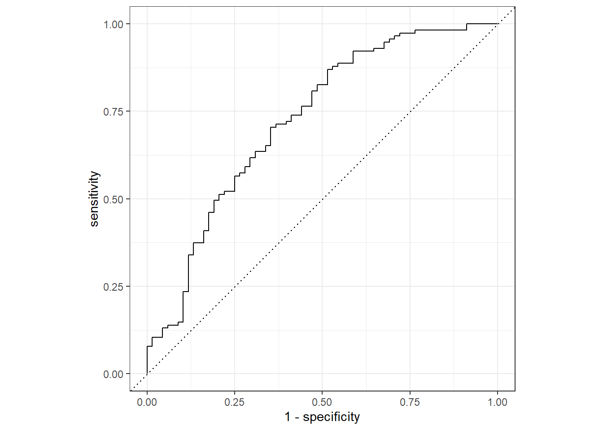

data_location <- here::here("fluanalysis","processed_data","Processed_data.Rds")
Processed_data <- readRDS(data_location)modeleval
Load processed flu data file
#Install necessary packages
library(rsample) #for data splittingWarning: package 'rsample' was built under R version 4.2.2library(workflows) #for combining recipes and modelsWarning: package 'workflows' was built under R version 4.2.2library(tidymodels) # for the parsnip package, along with the rest of #tidy models Helper packagesWarning: package 'tidymodels' was built under R version 4.2.2── Attaching packages ────────────────────────────────────── tidymodels 1.0.0 ──✔ broom 1.0.1 ✔ purrr 0.3.4
✔ dials 1.1.0 ✔ recipes 1.0.5
✔ dplyr 1.1.0 ✔ tibble 3.1.8
✔ ggplot2 3.4.0 ✔ tidyr 1.2.0
✔ infer 1.0.4 ✔ tune 1.0.1
✔ modeldata 1.1.0 ✔ workflowsets 1.0.0
✔ parsnip 1.0.4 ✔ yardstick 1.1.0Warning: package 'dials' was built under R version 4.2.2Warning: package 'dplyr' was built under R version 4.2.2Warning: package 'ggplot2' was built under R version 4.2.2Warning: package 'infer' was built under R version 4.2.2Warning: package 'modeldata' was built under R version 4.2.2Warning: package 'parsnip' was built under R version 4.2.2Warning: package 'recipes' was built under R version 4.2.2Warning: package 'tune' was built under R version 4.2.2Warning: package 'workflowsets' was built under R version 4.2.2Warning: package 'yardstick' was built under R version 4.2.2── Conflicts ───────────────────────────────────────── tidymodels_conflicts() ──
✖ purrr::discard() masks scales::discard()
✖ dplyr::filter() masks stats::filter()
✖ dplyr::lag() masks stats::lag()
✖ recipes::step() masks stats::step()
• Search for functions across packages at https://www.tidymodels.org/find/library(readr) # for importing data
Attaching package: 'readr'The following object is masked from 'package:yardstick':
specThe following object is masked from 'package:scales':
col_factorlibrary(broom.mixed) # for converting bayesian models to tidy tibblesWarning: package 'broom.mixed' was built under R version 4.2.2library(dotwhisker) # for visualizing regression resultsWarning: package 'dotwhisker' was built under R version 4.2.2library(dplyr)#Split data into training dataset and test dataset
set.seed(222)
#select 3/4 of the data and save into training dataset
data_split <- initial_split(Processed_data, prop=3/4)
#now create the two data frames based on the above parameters
train_data <- training(data_split)
test_data <- testing(data_split)glimpse(Processed_data)Rows: 730
Columns: 32
$ SwollenLymphNodes <fct> Yes, Yes, Yes, Yes, Yes, No, No, No, Yes, No, Yes, Y…
$ ChestCongestion <fct> No, Yes, Yes, Yes, No, No, No, Yes, Yes, Yes, Yes, Y…
$ ChillsSweats <fct> No, No, Yes, Yes, Yes, Yes, Yes, Yes, Yes, No, Yes, …
$ NasalCongestion <fct> No, Yes, Yes, Yes, No, No, No, Yes, Yes, Yes, Yes, Y…
$ CoughYN <fct> Yes, Yes, No, Yes, No, Yes, Yes, Yes, Yes, Yes, No, …
$ Sneeze <fct> No, No, Yes, Yes, No, Yes, No, Yes, No, No, No, No, …
$ Fatigue <fct> Yes, Yes, Yes, Yes, Yes, Yes, Yes, Yes, Yes, Yes, Ye…
$ SubjectiveFever <fct> Yes, Yes, Yes, Yes, Yes, Yes, Yes, Yes, Yes, No, Yes…
$ Headache <fct> Yes, Yes, Yes, Yes, Yes, Yes, No, Yes, Yes, Yes, Yes…
$ Weakness <fct> Mild, Severe, Severe, Severe, Moderate, Moderate, Mi…
$ WeaknessYN <fct> Yes, Yes, Yes, Yes, Yes, Yes, Yes, Yes, Yes, Yes, Ye…
$ CoughIntensity <fct> Severe, Severe, Mild, Moderate, None, Moderate, Seve…
$ CoughYN2 <fct> Yes, Yes, Yes, Yes, No, Yes, Yes, Yes, Yes, Yes, Yes…
$ Myalgia <fct> Mild, Severe, Severe, Severe, Mild, Moderate, Mild, …
$ MyalgiaYN <fct> Yes, Yes, Yes, Yes, Yes, Yes, Yes, Yes, Yes, Yes, Ye…
$ RunnyNose <fct> No, No, Yes, Yes, No, No, Yes, Yes, Yes, Yes, No, No…
$ AbPain <fct> No, No, Yes, No, No, No, No, No, No, No, Yes, Yes, N…
$ ChestPain <fct> No, No, Yes, No, No, Yes, Yes, No, No, No, No, Yes, …
$ Diarrhea <fct> No, No, No, No, No, Yes, No, No, No, No, No, No, No,…
$ EyePn <fct> No, No, No, No, Yes, No, No, No, No, No, Yes, No, Ye…
$ Insomnia <fct> No, No, Yes, Yes, Yes, No, No, Yes, Yes, Yes, Yes, Y…
$ ItchyEye <fct> No, No, No, No, No, No, No, No, No, No, No, No, Yes,…
$ Nausea <fct> No, No, Yes, Yes, Yes, Yes, No, No, Yes, Yes, Yes, Y…
$ EarPn <fct> No, Yes, No, Yes, No, No, No, No, No, No, No, Yes, Y…
$ Hearing <fct> No, Yes, No, No, No, No, No, No, No, No, No, No, No,…
$ Pharyngitis <fct> Yes, Yes, Yes, Yes, Yes, Yes, Yes, No, No, No, Yes, …
$ Breathless <fct> No, No, Yes, No, No, Yes, No, No, No, Yes, No, Yes, …
$ ToothPn <fct> No, No, Yes, No, No, No, No, No, Yes, No, No, Yes, N…
$ Vision <fct> No, No, No, No, No, No, No, No, No, No, No, No, No, …
$ Vomit <fct> No, No, No, No, No, No, Yes, No, No, No, Yes, Yes, N…
$ Wheeze <fct> No, No, No, Yes, No, Yes, No, No, No, No, No, Yes, N…
$ BodyTemp <dbl> 98.3, 100.4, 100.8, 98.8, 100.5, 98.4, 102.5, 98.4, …#creating a receipe
flu_rec <-
recipe(Nausea ~ ., data=train_data)#create the model
lr_mod<-
logistic_reg()%>%
set_engine("glm")#combine receipe and model
flu_wflow <-
workflow() %>%
add_model(lr_mod)%>%
add_recipe(flu_rec)flu_wflow══ Workflow ════════════════════════════════════════════════════════════════════
Preprocessor: Recipe
Model: logistic_reg()
── Preprocessor ────────────────────────────────────────────────────────────────
0 Recipe Steps
── Model ───────────────────────────────────────────────────────────────────────
Logistic Regression Model Specification (classification)
Computational engine: glm flu_fit<-
flu_wflow %>%
fit(data=train_data)#to view your model details
flu_fit %>%
extract_fit_parsnip() %>%
tidy()# A tibble: 38 × 5
term estimate std.error statistic p.value
<chr> <dbl> <dbl> <dbl> <dbl>
1 (Intercept) 1.63 9.40 0.173 0.862
2 SwollenLymphNodesYes -0.241 0.232 -1.04 0.298
3 ChestCongestionYes 0.219 0.257 0.853 0.394
4 ChillsSweatsYes 0.115 0.332 0.346 0.729
5 NasalCongestionYes 0.560 0.311 1.80 0.0713
6 CoughYNYes -0.705 0.611 -1.15 0.249
7 SneezeYes 0.117 0.248 0.473 0.636
8 FatigueYes 0.177 0.438 0.403 0.687
9 SubjectiveFeverYes 0.229 0.264 0.868 0.385
10 HeadacheYes 0.435 0.352 1.24 0.216
# … with 28 more rows
# ℹ Use `print(n = ...)` to see more rowspredict(flu_fit,test_data)Warning in predict.lm(object, newdata, se.fit, scale = 1, type = if (type == :
prediction from a rank-deficient fit may be misleading# A tibble: 183 × 1
.pred_class
<fct>
1 No
2 No
3 No
4 No
5 No
6 Yes
7 Yes
8 No
9 No
10 Yes
# … with 173 more rows
# ℹ Use `print(n = ...)` to see more rowsflu_aug <-
augment(flu_fit, test_data)Warning in predict.lm(object, newdata, se.fit, scale = 1, type = if (type == :
prediction from a rank-deficient fit may be misleading
Warning in predict.lm(object, newdata, se.fit, scale = 1, type = if (type == :
prediction from a rank-deficient fit may be misleadingflu_aug %>%
select (Nausea, RunnyNose,Fatigue,.pred_class,.pred_Yes)# A tibble: 183 × 5
Nausea RunnyNose Fatigue .pred_class .pred_Yes
<fct> <fct> <fct> <fct> <dbl>
1 No No Yes No 0.0377
2 Yes Yes Yes No 0.283
3 No Yes Yes No 0.320
4 Yes Yes Yes No 0.442
5 No No Yes No 0.170
6 Yes No Yes Yes 0.812
7 Yes Yes Yes Yes 0.746
8 No No Yes No 0.275
9 No No Yes No 0.280
10 Yes No Yes Yes 0.719
# … with 173 more rows
# ℹ Use `print(n = ...)` to see more rowsflu_aug %>%
roc_curve(truth=Nausea, .pred_No) %>%
autoplot()Warning: Returning more (or less) than 1 row per `summarise()` group was deprecated in
dplyr 1.1.0.
ℹ Please use `reframe()` instead.
ℹ When switching from `summarise()` to `reframe()`, remember that `reframe()`
always returns an ungrouped data frame and adjust accordingly.
ℹ The deprecated feature was likely used in the yardstick package.
Please report the issue at <https://github.com/tidymodels/yardstick/issues>.
flu_aug %>%
roc_auc(truth=Nausea, .pred_No)# A tibble: 1 × 3
.metric .estimator .estimate
<chr> <chr> <dbl>
1 roc_auc binary 0.724